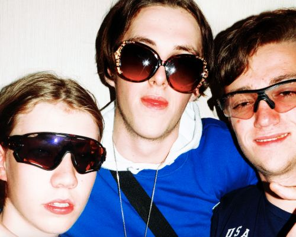

Taste the future
After countless years of trial and error we have found the worst taste in the world. Imagine drinking a smoothie of a rotten fish mixed with feces and acid.
Sounds to bad to be true?
Actually it is the opposite, good and true. You will never drink another can again. So simple, yet so effective.
Storage of Carbon Capture soda
will increase as consumers taste the awful soda. Each can packs 1700g of CO2. We know the math does not add up. We are basically dividing by zero. Impossible,
yet possible. Order your first Carbon Capture soda today. Minimum order 10 000 cans.